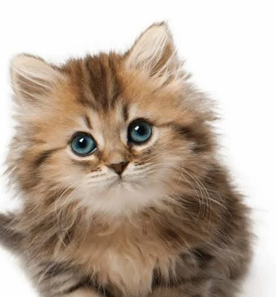

GIỚI THIỆU BẢN THÂN
Phương châm sống
- Mình tên là Licorice
- Phương châm sống của mình là: Life is a blank canvas, paint it beautiful.(Cuộc sống là một bức tranh trống, hãy vẽ nên điều tươi đẹp.)
- Mình là một người yêu nghệ thuật, thích kể chuyện qua từng nét vẽ và luôn tìm kiếm sự tĩnh lặng trong tâm hồn.
Sở thích
- Vẽ tranh digital (đặc biệt là màu nước và thiết kế nhân vật).
- 📖 Đọc tiểu thuyết giả tưởng và sách triết lý.
- 🎧 Chill cùng nhạc Lo-fi và nhạc không lời khi làm việc.
- 🚶♂️ Lang thang ở phòng tranh hoặc phố cổ để tìm cảm hứng.
Sở trường
- ✨Kỹ năng mỹ thuật: Phối màu tốt, thành thạo các phần mềm thiết kế.
- 🧩Tính cách: Kiên nhẫn, tỉ mỉ, khả năng tập trung cao độ khi sáng tạo.
- 📜Tư duy: Lên ý tưởng và xây dựng kịch bản (Storyboarding/Storytelling)
Điều mình thích
- Mùi hương của giấy và sách cũ
- Những buổi chiều mưa nhẹ mát mẻ
- Đồ ngọt (Chocolate, Tiramisu)
Điều mình không thích
- Tiếng ồn lớn và sự hỗn loạn
- Sự vội vàng và áp lực thời gian quá gấp
- Sự thiếu hợp tác & không tôn trọng công sức